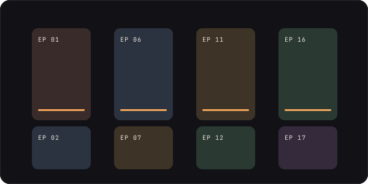

DATA SCIENCE BSc / FILM & DRAMA MA / VISITOR @ UCL CS
以算法与数据
测量内容
ALGORITHMS & DATA > CONTENT
以视听与审美
理解用户
SOUND, IMAGE & TASTE > PEOPLE
PROJECTING
移动鼠标或手指拖动，扫描线会跟着走
TC 00:00:00
陕西师范大学 戏剧与影视 硕士（2027 届）·华中农业大学 数据科学与大数据技术 学士
2026 年 5 月至 10 月，UCL 计算机系 Visitor（研究访问），参与人机交互方向研究
求职意向：AI 产品运营 / AI 内容运营 【待确认：意向措辞】
项目
PROJECTS / 4
四个 AI 产品原型：电影解说、旅行文化、图文排版和创作者数据复盘。

视频作品
VIDEOS / 4
一部代码绘制的古风短片，三支 AI 生成的短片。每个视频下面的色带是它的电影条形码：全片各个时刻的平均色，点一下就跳到那个时刻。
晒被子吃西瓜
3D 植绒盲盒动画 ·
秋日穿搭
竖屏穿搭短片 ·
高空馄饨摊
赛博朋克一镜到底 ·
三支 AI 短片的做法需求故事板素材清单提示词生成与修正即梦 · ChatGPT 生图
论文与课题
RESEARCH / 3 PAPERS, 1 FUNDED STUDY
用数据科学的方法研究电影：色彩、票房、字幕情绪，以及微短剧产业。

第一作者 · 《电影评介》（中文核心）
中日美赛博朋克动画色彩比较研究
用电影条形码、K-Means 聚类和 HSV 色彩模型，比较三国作品在明度、饱和度与色相上的差异，并联系各自的文化观念。

独立作者 · 《喜剧世界》
喜剧电影票房影响因素研究
采集 931 部喜剧电影，构建制作、内容、观众三类变量，回归分析发现导演产出能力与类型融合是票房的显著预测因素。

“地缘杯”中国电影青年学者优秀论文奖 三等奖 · 2024
数字人文视角下贾樟柯地缘电影的文化研究
采集 6 部贾樟柯电影的字幕，用 jieba 分词、SnowNLP 情感打分和 LDA 主题模型分析主题与情绪的变化，归纳影片中的地域文化标记。

西安市社会科学规划基金课题 · 主要参与人 · 2025 年 12 月结项
新质生产力赋能西安“微短剧+”业态创新发展路径研究
【待补：本人负责的部分】
荣誉
第 17 届全国大学生广告艺术大赛 陕西赛区 影视广告类 一等奖（2025，三人合作）
第二届“地缘杯”中国电影青年学者优秀论文奖 三等奖（2024）
工具
数据Python · pandas · scikit-learn · jieba · SnowNLP · LDA
AI即梦 · ChatGPT 生图 【待补：常用 AI 工具与 Agent】
内容【待补：剪辑、设计工具】